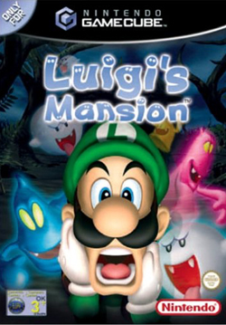
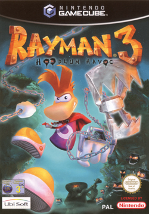
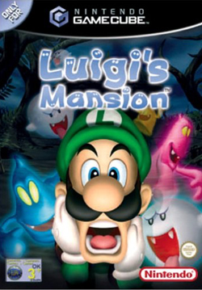
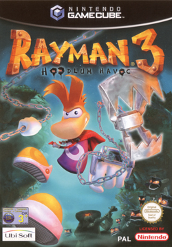

La GameCube est une console de jeux vidéo de salon du fabricant japonais Nintendo, sortie en 2002 en Europe, développée en association avec IBM, NEC et ATI.
Ce fut la dernière des consoles de sixième génération, qui comporte la PlayStation 2 de Sony, la Xbox de Microsoft, et la Dreamcast de Sega.
 


